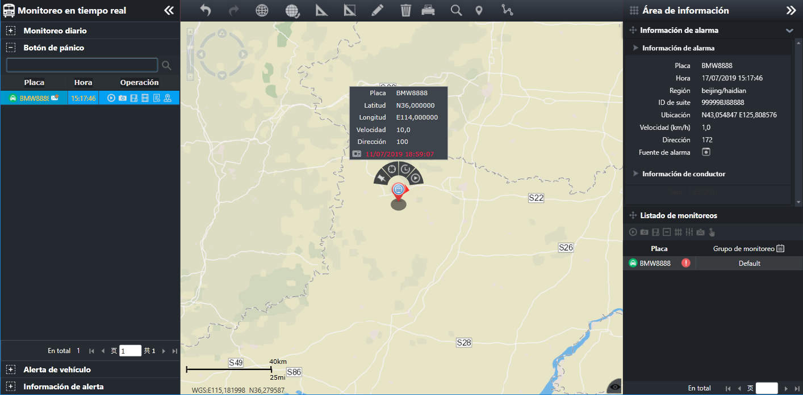

Durante la operación del vehículo, cuando el conductor se encuentra con una emergencia, el conductor o el público pueden alarmar
a través del dispositivo de un botón de pánico. El sistema puede recibir y registrar la información de la alarma, proporcionar
la ubicación del vehículo de la alarma, el video de la alarma y la función de vista la trayectoria historial, rastrear el
vehículo, y manejar a la policía, etc.
En la barra de menú de navegación izquierda, seleccione el menú principal para entrar a la interfaz principal de alarma de vehículo.

Fig 38 Interfaz principal de alarma de vehículo